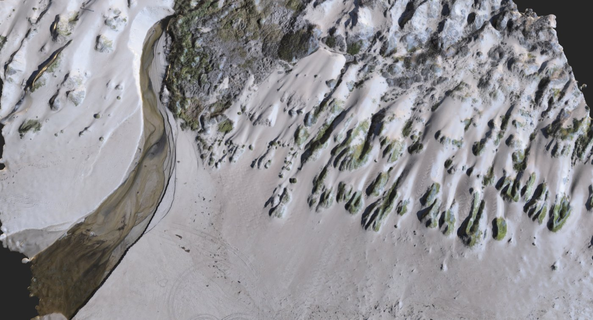
My goal is to be a force multiplier (x) for positive (+) change (Δ). I leverage sensors on phones, drones, planes, and satellites to measure Earth’s water, forests, and changing landscapes. Chief Scientist at Working Trees. Assistant Professor at Cal Poly SLO.
I’m a geospatial scientist driven by one equation: x + Δ — be a force multiplier for positive change. My work sits at the intersection of remote sensing, environmental science, and technology, using data from instruments across every spatial and temporal scale to understand how water, forests, and landscapes are changing.
I hold a PhD in Geophysics from Stanford University, where my dissertation was recognized as the 2023 Exceptional PhD Thesis. My career has spanned NASA, the World Wildlife Fund, a precision agriculture startup, and co-founding Working Trees. I now bring all of this to the classroom at Cal Poly SLO, where I’m building a next-generation geospatial science program.
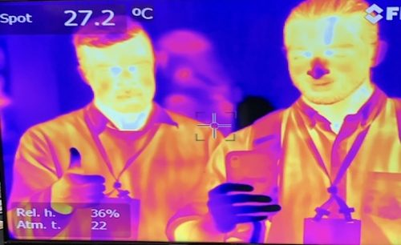
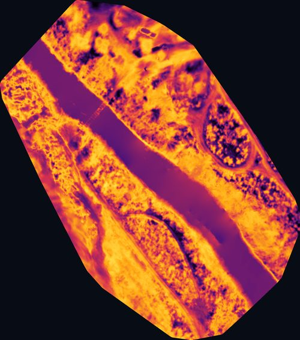
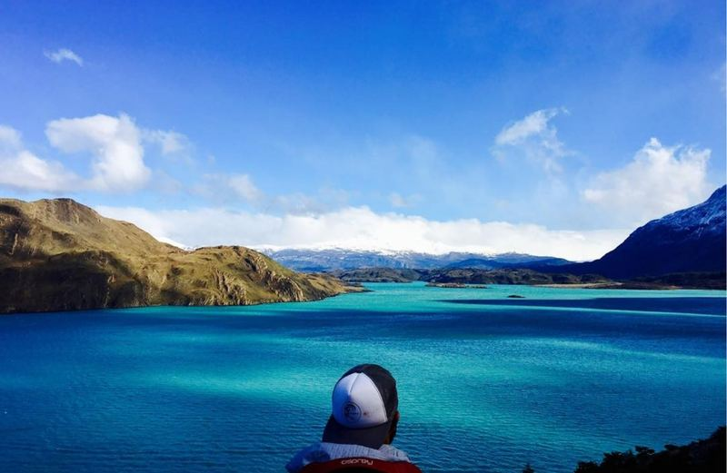
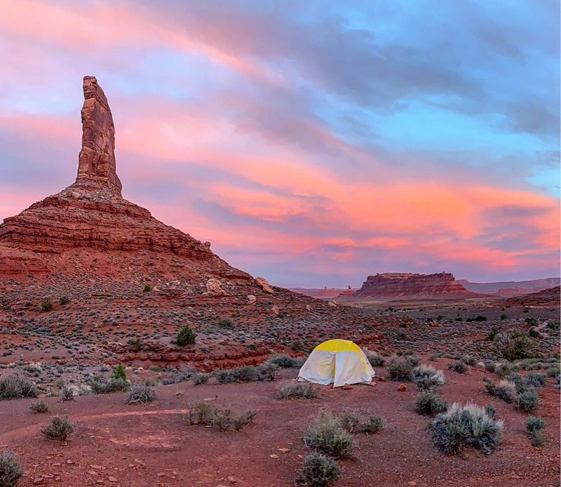
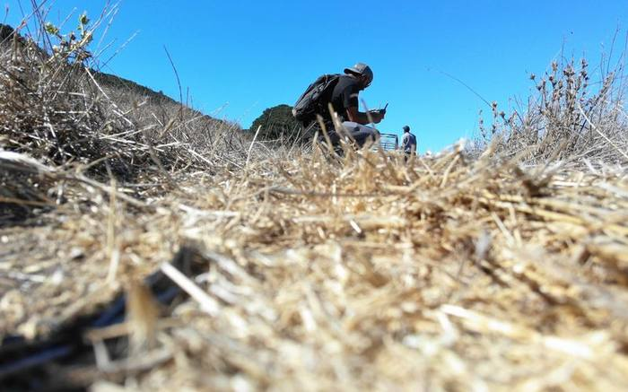
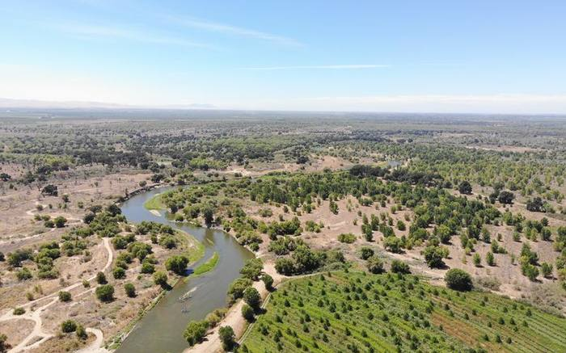
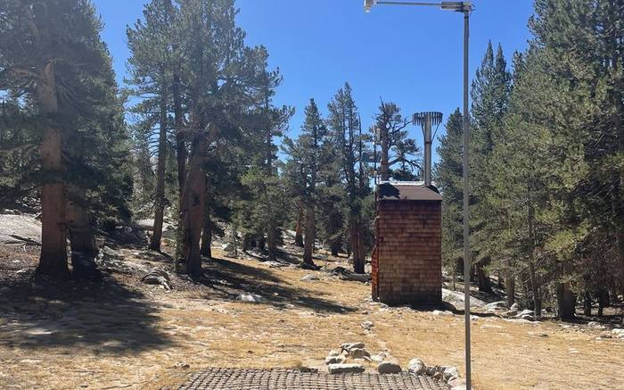
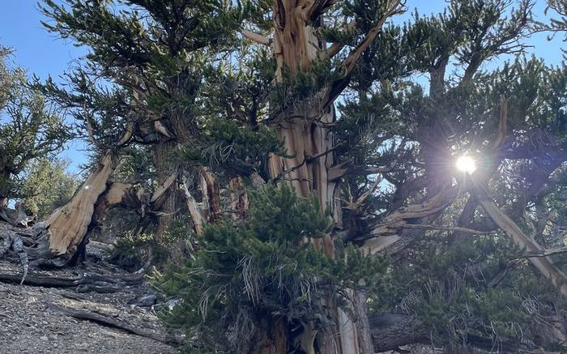
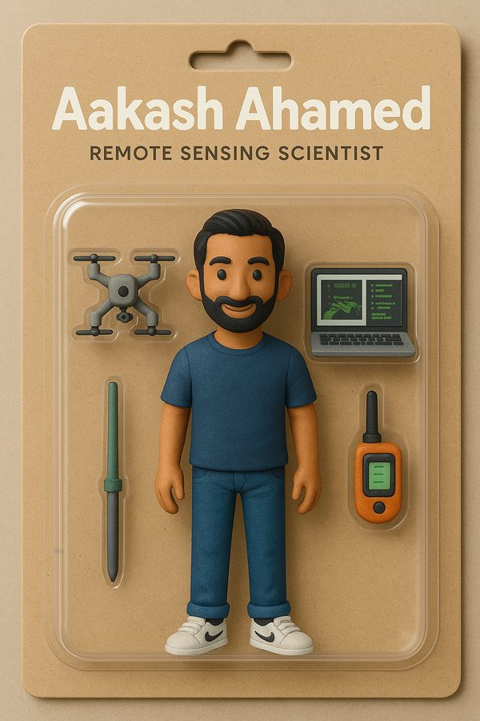
Three core research programs spanning water, forests, and natural hazards — each powered by satellite and drone-based sensing.
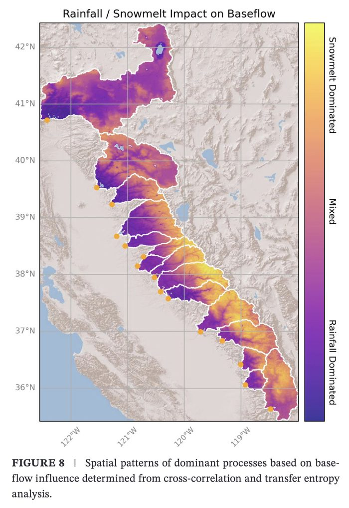
Using satellite remote sensing (GRACE, Landsat, MODIS) in a mass balance approach to estimate groundwater storage changes across California at scales from ~1,000 to 100,000+ km². This work produced the first statewide high-resolution groundwater dataset validated against well measurements, GRACE gravity data, and regional flow models. A parallel analysis combined remotely sensed rainfall and snowmelt with streamflow data to identify source areas in the Sierra Nevada that most strongly influence downstream baseflow — finding that mid-elevation snowmelt (3,000–3,700 m) has the greatest impact. 2023 Exceptional PhD Thesis at Stanford.
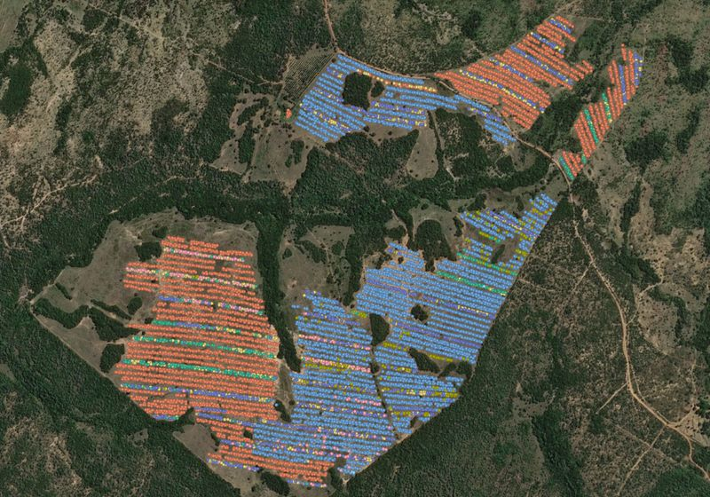
Developing low-cost methods to measure tree growth and carbon sequestration using phone photogrammetry, drones, and satellite imagery. Applied through Working Trees across 2,000+ hectares in Brazil.
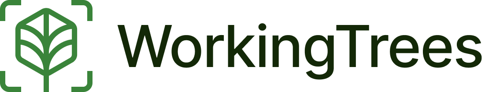
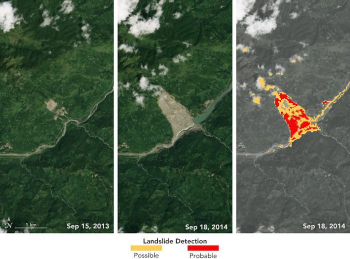
At NASA Goddard, built automated satellite-based monitoring systems for floods and landslides across Southeast Asia and Nepal. The DRIP-SLIP landslide detection algorithm became a patented NASA software product.
Selected awards, honors, and press coverage.